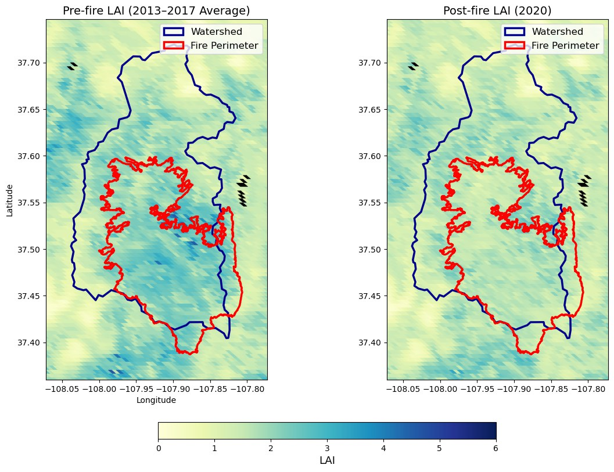

Projects
Selected work in rivers, hazards, and environmental data. Click a panel for the full story.

Great Salt Lake Functional Flows Explorer
Interactive maps of functional-flow metrics for ~2,500 stream segments feeding the Great Salt Lake.
Read more →
SCAR: Satellite-based Classification of post-fire Alluvial Response
Building the empirical record that post-fire debris-flow risk models are missing — from orbit. Ongoing.
Read more →
Post-Fire Flood Prediction: Vegetation Recovery Metrics
Satellite-derived recovery metrics that quantify how far a burned watershed's vegetation has bounced back — a predictor for post-fire flood magnitude.
Read more →Summit Creek: Low-Tech Process-Based Restoration
A capstone restoration on a 1.3-mile reach — building in-stream habitat complexity and reconnecting floodplain, with USU, USFS, and UDWR.
Read more →Lahontan Cutthroat Trout & Sacramento Perch, Pyramid Lake
Undergraduate research comparing diet overlap and relative abundance of native Lahontan Cutthroat Trout and non-native Sacramento Perch.
Read more →